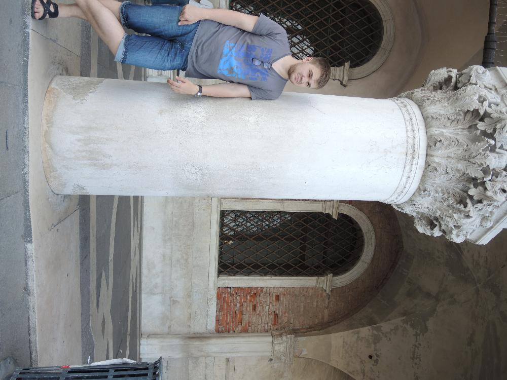

Венеция. Четвертый день.
19.06.2014
Не изобретайте велосипед, потому что его уже изобрел Леонардо да Винчи
- Музей Леонардо да Винчи
- Фествиваль контемпрорари
- Вид Венеции сверху

19.06.2014
Не изобретайте велосипед, потому что его уже изобрел Леонардо да Винчи
(мысли) где же этот дурацкий канал....
Фотка как раз с предыдущего фото
Общественный трансопрт - называется вопаретто. Похож на наши троллейбусы - только на воде.
Музей Леонардо да Винчи. Оказывается это он придумал блоки из учебника по физике. Легче поднять мешок, который на фото справа
В музее куча разных крутилок и изобретений Леонардо. Всех их можно трогать руками и крутить - вертеть
Наташа и Ксюша
Изобретения восстановлены по чертежам Леонардо. Очень любопытный стопор у колеса
Ничего не напоминает?
Представляете, человек жил в 15 веке и уже тогда хотел сделать робота - вот это амбиции.
Средневековые шарниры
Крылья забубенил - летать хотел.
Вот такой необычный парашют. Ощущуение, что человек с палаткой от ларька летит.
Так Леонардо хотел ходить по воде.
Полезное изобретение. Ползешь по лестнице на стену, а тебя раз и скинули.
Попали на фестиаль контемпрорари(танцульки)
Собственно танцоры. Танцоры Антона Лаки.
Либо она поседела во время выступления, либо это седая длинноволосая бабушка. Очень красивая, мы восхищены!
 В шляпе теперь
В шляпе теперь
 Американка со словами "Я буду счастлива" сфоткала нас
Американка со словами "Я буду счастлива" сфоткала нас

Пицца-паста подходим покупаем
Мост вздохов. Известен совсем не тем, чем вы подумали.
Здесь приговоренные на смертельную казнь смотрели на Венецию в последний раз и вздыхали.
Не кормите голубей - у них из-за вас у них проблемы со здоровьем, а проблемы со здоровьем влекут разрушение памятников. Короче загадят они все вокруг.
Лифтово-зеркально-потолковое селфи
Венеция, пора прощаться
Еще несколько кадров
Венеция, мы тебя любим)

Последние посиделки у неизвестных каналов
Англия - Уругвай - лавочный болельщик
Ну все, мы погнали в Верону, проведать Джульетту!